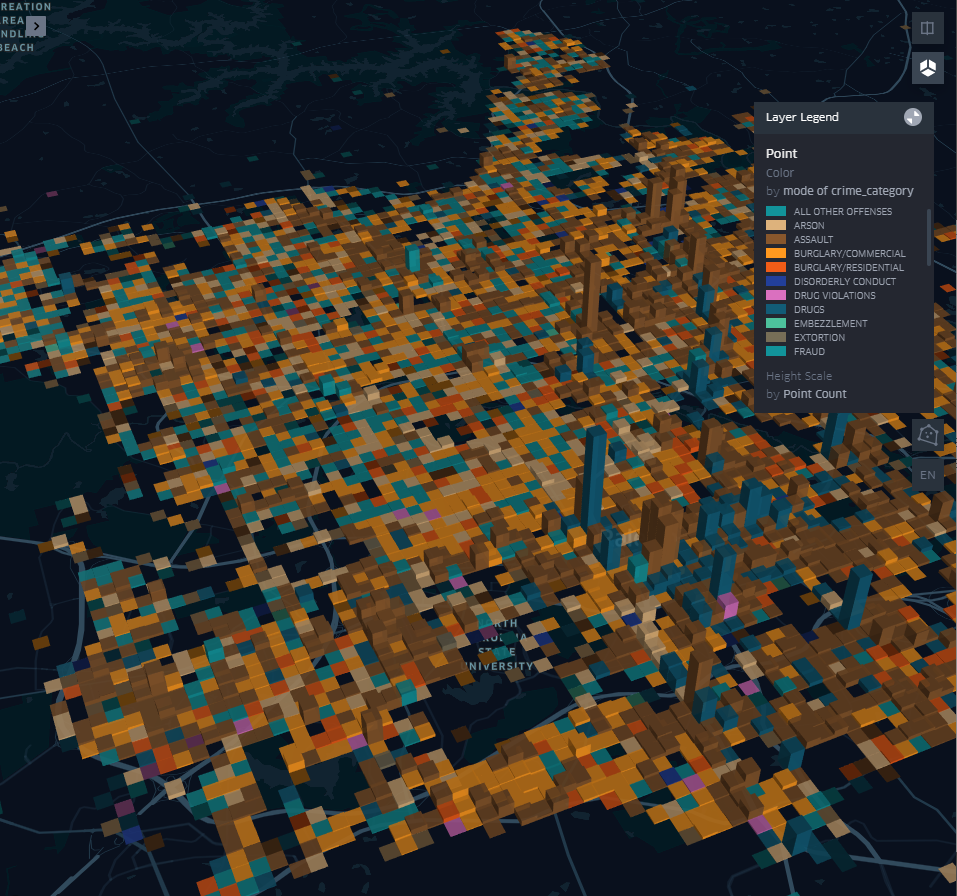

Spring 2020
Final Project Visualization
My research currently focuses on assessing the probability of arrival of agricultural pests, on a global scale in conjunction with the Animal and Plant Health Inspection Service (APHIS). Our model is in the very early stages of development, with our basic structure having only been approved by our stakeholders about two weeks ago. As a result, several lab members have been playing around with a suite of different visualization tools to so we can begin sketching out a dashboard both to present as a final product to our stakeholders, and to allow our own interpretation of the complex networks that we are working with. Our model (at this moment in time) assess the probability of a given pests arrival as a function of it's presence and distribution in the host country, the propagule pressure (in this case, trade volume), and phytosanitary measures conducted on departure or arrival. Several lab mates are currently working on a geographic display of some of this data - essentially an interactive global chloropleth with lines, representing trade volume between countries of interest. While such a vizualization is instantly familiar to the viewer, it utilizes one of the most imporant dimensions of the graph - the x and y space, to visualize the distance between countries. From an ecological or biological perspective, trade on airplances happens instantly and trade of fresh plant parts in refrigerated ships happens nearly instantly - in other words, the distance between countries is a relatively insignificant component of the risk, to the point that it may not need to be considered. To free up this visual space, I am working on a network based visualization of our model output so that data can potentially be encoded by the relationships between the nodes. However,our model does not currently produce meaningful output based on real-world data. Rather, it is currently running on some simple simulated data I generated on trade volumes between countires, phytosanitary compliance and species presence.
Because I have no experience working with or visualizing networks, I initially gravitated towards building simple networks of our model in R, both because that is the language I am most comfortable in and becauseit is the language I used to create our simulated data. The apparently most commonly used graph-visualization package in R is iGraph, which has a large suite of built-in visualization tools as well as support for the Dot language - a common way to store graph structure that is used by gephi, graphviz and other visualization tools. This package allowed me to assign most of the attributes of our model to diferent aspects of the graph. Node color represented probability, node edge color represented arrival phytosanitary compliance, edgethickness represented trade volume and edge color represented departure phytosanitary compliance. Node size was free to encode additional information as needed. A simple output (a sketch of sorts) using iGraph using the described encoding is availible above.
As I began to scale up the data to the 240 countries in our model, it became quickly evident that signficiant filtering of values was needed to improve readibility. Graphs with more than 15 or 20 nodes quickly become overwhelming and uninterpretable, as seen by the graph above, already filtered to just all countries trading with Korea.
As I interacted more with the package, I realized that support for drawing node border thickness in the R version iGraph had been dropped (seemingly by error) and had not been supported by any version of iGraph for many years and the capacity to build interactive tools to modify the graph on the fly was limited. I then moved to implementing the same style of graphs in the python version of iGraph, which reportedly supports drawing node borders. After several hours, it became apparent that the python version of iGraph lacks support for many of the features I had used in R and is a much more limited version of the software. Finally, I moved to the networkX package in python, which is the most commonly used tool for graph visualization and analysis in python. NetworkX has good support for pyplot and as an extension, has good support for making interactive visualizations with Dash. After reviewing my R-iGraph sketches with our APHIS stakeholders on 4/30, my lab came to the conclusion that a simple tool to allow the selection and filtering of individual countries, one at a time to the model would be the most helpful initial visualization as we began to migrate our model to real world data. A simple implementation of that interactive model output, built using plotly and Dash and hosted by heroku is availible below. This interactive visualization allows for the selection of individual countries as nodes using the checkbox list, and visualizes the risk of invasion as node color and arrival phytosanitary compliance as node border color. It also allows for the selection of different graph layouts, to improve readability. Node names are availible on hover to decrease visual clutter with >10 nodes.
Unfortunately, although pyplot is the way most users visualize their networkX graphs, it does not seem to offer support for graphing directed graphs ( edges as direction arrows). Although I found some incredibly hacky solutions to this problem online (leveraging dramatically offset and reized wingdings-style triangles as arrowheads), I could not get any of them to work in a satisfactory manner after substatial effort. The other significant downside to using NetworkX instead of iGraph is that it does not allow the setting of individual edge attributes. Rather, edges are called by a referencing a pre-made style. This is a rather inflexible method of visualization for networks that rely heavily on node attributes. As I continue in my investigation, I may switch to a different visualization package again that offers more support for edges without having to generate hundreds of unique styles.
Kepler Vizualizations
My first visualization, modelled after Corey's instructions shows an animated look at the number of occurences of Raleigh's crime data through time.
My second visualization looks at the locations of the most prominent crime type for a given area, with the height showing the number of reports. There appear to be strong clusters of drug-related crimes and assaults reported.

As I interacted more with the package, I realized that support for drawing node border thickness in the R version iGraph had been dropped (seemingly by error) and had not been supported by any version of iGraph for many years and the capacity to build interactive tools to modify the graph on the fly was limited. I then moved to implementing the same style of graphs in the python version of iGraph, which reportedly supports drawing node borders. After several hours, it became apparent that the python version of iGraph lacks support for many of the features I had used in R and is a much more limited version of the software. Finally, I moved to the networkX package in python, which is the most commonly used tool for graph visualization and analysis in python. NetworkX has good support for pyplot and as an extension, has good support for making interactive visualizations with Dash. After reviewing my R-iGraph sketches with our APHIS stakeholders on 4/30, my lab came to the conclusion that a simple tool to allow the selection and filtering of individual countries, one at a time to the model would be the most helpful initial visualization as we began to migrate our model to real world data. A simple implementation of that interactive model output, built using plotly and Dash and hosted by heroku is availible below. This interactive visualization allows for the selection of individual countries as nodes using the checkbox list, and visualizes the risk of invasion as node color and arrival phytosanitary compliance as node border color. It also allows for the selection of different graph layouts, to improve readability. Node names are availible on hover to decrease visual clutter with >10 nodes.
Unfortunately, although pyplot is the way most users visualize their networkX graphs, it does not seem to offer support for graphing directed graphs ( edges as direction arrows). Although I found some incredibly hacky solutions to this problem online (leveraging dramatically offset and reized wingdings-style triangles as arrowheads), I could not get any of them to work in a satisfactory manner after substatial effort. The other significant downside to using NetworkX instead of iGraph is that it does not allow the setting of individual edge attributes. Rather, edges are called by a referencing a pre-made style. This is a rather inflexible method of visualization for networks that rely heavily on node attributes. As I continue in my investigation, I may switch to a different visualization package again that offers more support for edges without having to generate hundreds of unique styles.
Five Sheets Design Process

Sheet 1: Ideas
The beginning of the Five Sheet Design Process. This sheet served as the brainstorming platform for the following 4 sheets. All ideas were jotted down, with no preference to plausability.

Sheet 2: Idea 1
This idea pays tribute to the variety of ways that seemingly complicated geospatial data can be represented. The final product of this idea would be a global map with pins placed for the birth locations of grandparents, parents, and CGA students. One student's family points are connected wih a single color of twine.

Sheet 3: Idea 2
This second idea initiates representing data through a GUI. The focus here is mapping food preferences by generation.

Sheet 4: Idea 3
The third and final idea aims to incorporate most if not all of the considered data types, striking a balance between interactive spatial data and easy to interpret infographics.

Sheet 5: Idea 5 Refined
This sheet represents improvements, refinements, and clarifications from the previous idea. There are certianly more detailed considerations for how this would come to be, but in the age of dynamic, interactive interfaces - this is doable!